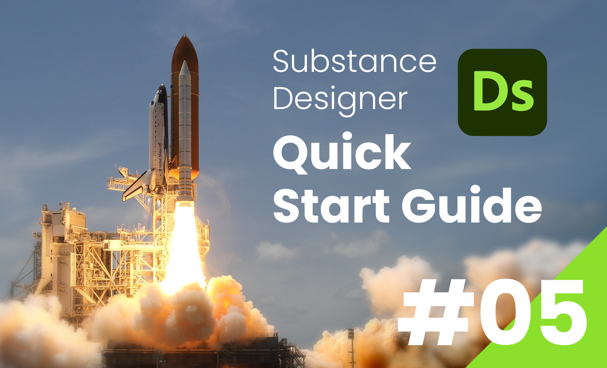

SubstanceDesigner
Substance Designer クイックスタートガイド
第5回：ノーマル・AOマップ
2024/02/15

前回 は、3Dビューの設定とハイトマップの概要について解説しました。
今回は、ハイトマップを作るうえで大切な画作りの理論と、ノーマル・AOマップの作り方について解説します。
今回は例として、「レンガ」 のマテリアルを作ってみようと思います。
ディテールのレベル
ハイトマップを作るにあたり、まずは画作りに大切な ディテール の考え方について解説します。
ディテールとは、物の形状の情報 のことです。
例えば、石のディテールといえば、角の欠けた表情や、表面のでこぼこした凹凸のことを表します。
ハイトマップを作るにあたっては、大きさによって 以下のようにディテールを分類すると考えやすいです。
・ラージ (Large) ディテール
遠くから見て分かる程度の、大まかな形状、起伏。
・ミディアム (Medium) ディテール
ある程度近い距離から視認できる、中程度の表情。（エッジのベベルや面積の広い凹凸）
・スモール (Small) ディテール
至近距離でやっと視認できる程度の、表面の細かい質感。
ラージ > ミディアム > スモール の順序で、より大きなディテールをつぶさないように気を付けます。
例えば、表面の細かいザラザラとした質感があまりに強いと、エッジの欠けた表情や、面の向きの微妙な違いといった情報が伝わりづらくなってしまいます。
ハイトマップの作成
では実際に、ノードベースでハイトマップを作成する工程を解説していきます。
まずは、レンガの大まかな凹凸 (ラージディテール) を再現します。
今回は、レンガ状のパターンを作成するのに便利な Brick1 というノードを配置します。
そして、マテリアルにハイトマップを接続するために、BaseMaterial ノードの User-Defined Maps パラメータの Height のトグルを True にします。
すると、BaseMaterialノードのハイトマップを接続する入力ピンが表示されるので、Brick1ノードの出力のコネクションを接続します。
BaseMaterialノードによって補正されたハイトマップがアウトプットノードへと出力されますが、階調のしきい値やレベルは Height Position と Height Range パラメータで調整できます。
ノーマル・AOマップとは
続いて、ハイトマップをもとに、ノーマル・アンビエントオクルージョン マップを作成します。
Normal (法線) マップ
ノーマルマップとは、面の向き (法線) の情報を、RGBチャンネルで表現したテクスチャです。
面のXYZ軸の法線の向きを、RGBチャンネルで表現します。
法線に変化のないフラットな面は、正面向き (Z軸・Bチャンネル) の成分が強いため、青紫のような色をしています。
ノーマルマップを作る上で気を付けなければいけないのは、1ピクセルに満たない法線の変化は見た目に影響しない ということです。
あくまで光の反射によって表面の凹凸を表現しているだけなので、視差による物体の高低差を再現することはできません。
そのため、ディテールの強弱は、ノーマルマップのベベルの幅や後述の AO の強弱よって表現します。
Ambient Occlusion マップ
アンビエントオクルージョン (AO) マップとは、環境光が遮られた空間の陰影 を表現するテクスチャです。
例えば、指同士をくっつけるとわずかな暗い領域が現れるように、面同士が接近している箇所には光の届かないほのかな陰が発生します。
リアルタイムレンダリングでは、処理負荷を抑えながら物理的にリアルな光の反射を再現するために、しばしばAOマップが使用されます。
ノーマル・AOマップの作成
SubstanceDesignerでハイトマップからノーマル・AOマップを作る手順は簡単です。
理想的なハイトマップが得られている場合には、Normal・HBAO ノードにハイトマップを入力するだけです。
ただし、今回使用する Brick1 のように明暗の稜線がパキっとしているハイトマップでは、ノーマルマップに変換した際に法線が変化する領域が狭いために、ベベルの幅が狭くなりディテールが弱くなってしまいます。
そこで、今回はディテールを誇張するために Bevel ノードを使用します。
Bevelノードの Distance パラメータを調整することで、明暗の境界線に直線的なグラデーションを加えることができます。
オレンジ色の出力ピンからは、ノーマルマップに変換されたテクスチャが出力されます。
(今回は、後々の工程でディテールを追加することを考慮して、出力されたハイトマップをNormalノードで変換します。)
最後に、BaseMaterialノードのノーマル・AOマップの入力ピンを有効 にして、各マップを接続します。
これで、ノーマル・AOマップがマテリアルに適用され、Outputノードへと出力されます。
まとめ
今回は、画作りに大切なディテールの理論と、ノーマル・AOマップについて解説しました。
次回はいよいよパッケージをマテリアルとして書き出すまでの工程を解説しようと思います。